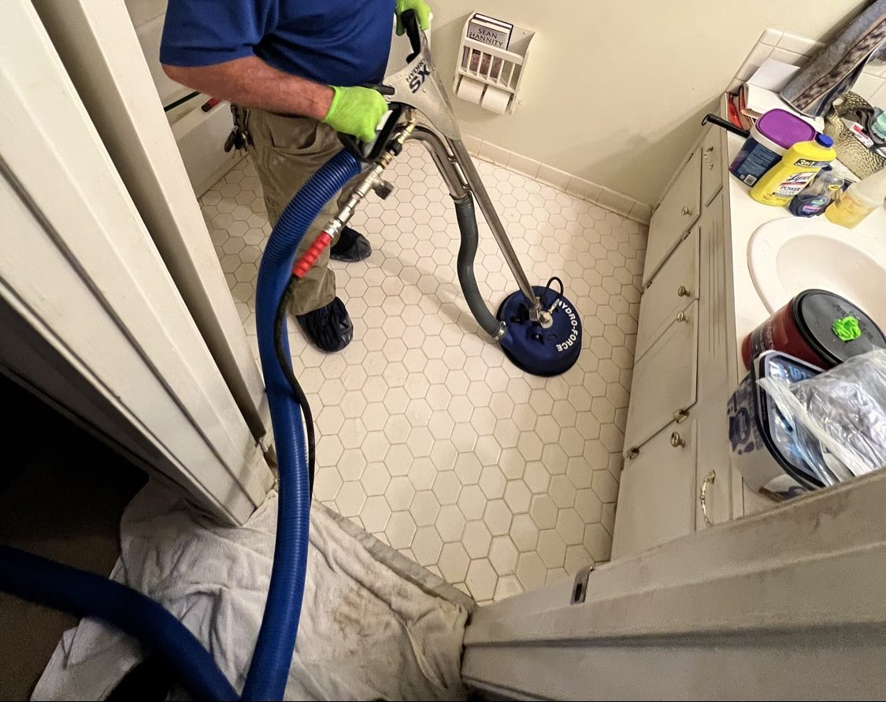

From the blog
Tile and Grout Cleaning in Mobile, AL: What to Expect
October 26, 2026

Tile itself is tough. Grout is not. Grout is porous, so it soaks up dirt, spills, mop water, and the fine grit that shoes track in from a Mobile yard. Over time the grout lines turn gray or brown even when the tile still looks fine, and regular mopping just moves dirty water around. That is why so many kitchens, bathrooms, and entryways around Midtown Mobile, West Mobile, Saraland, and Satsuma look tired even though the tile is in good shape.
Professional tile and grout cleaning is a deep steam clean, not a stronger mop. It lifts grime out of the grout lines and brings back the contrast between tile and grout that makes a floor look new again.
What a professional cleaning covers
- A full sweep and prep. Loose dirt and grit come off first, so nothing gets ground deeper into the grout during cleaning.
- A deep steam clean of tile and grout. Heat and pressure lift years of buildup from grout lines, including in kitchens where cooking grease settles in.
- Attention to the worst spots. Entryways, kitchen work zones, shower floors, and the paths everyone walks every day usually need the most work.
- A final rinse and check. The floor should look even when it dries, not patchy, and grout lines should read as one color again.
Why Mobile grout gets dirty faster
Mobile humidity plays a part. Damp air, wet shoes after a summer storm, and sandy soil from yards in Tillmans Corner, Theodore, and Semmes all end up on the floor. Bathrooms stay damp longer here too, which lets mildew settle into shower grout. None of that means the floor is ruined. It means grout here needs a real cleaning now and then, the same way siding and driveways do.
Sealed grout holds up better than unsealed grout, but sealant wears down with foot traffic and cleaning. If water soaks straight into your grout instead of beading up, the seal is likely gone.
What it costs
Prices from our pay page are straightforward. Tile and grout cleaning is $149 for 1 room, $269 for 2 rooms, and $379 for 3 rooms. Larger jobs and homes with tile through most of the house get a custom quote, so you know the full price before work starts.
If you are booking more than one service, remember that 3 or more services get 10 percent off on the pay page. Tile and grout pairs well with a house wash, a driveway wash, or window cleaning when you want the whole home to feel refreshed at once.
How to keep grout cleaner between cleanings
- Mop with clean water. Change the water often. Dirty mop water is the fastest way to gray out grout.
- Use a doormat and a shoe routine. Most grit comes in through the front door and the garage door.
- Wipe spills right away. Coffee, tomato sauce, and pet accidents stain grout if they sit.
- Vent the bathroom. Run the fan during and after showers so shower grout dries out.
- Skip harsh scrub pads on grout. They wear grout down and make it grab dirt faster.
When to call a pro instead of scrubbing harder
If you have scrubbed a grout line by hand and it still looks dark, the dirt is below the surface and hand scrubbing will not reach it. The same goes for grout that stays dark after it dries, or a floor that looks clean when wet but dull again once dry. A steam clean reaches that deeper grime without grinding the grout away.
Tile and grout cleaning is also a smart step before holiday guests arrive, before listing a home, or after a remodel when fine dust has settled into every grout line.
Ready for grout that looks like grout again?
Kinney Cleaning Services does tile and grout cleaning across Mobile County. Veteran owned and operated.
Call (251) 767-0754 Get a Custom Quote